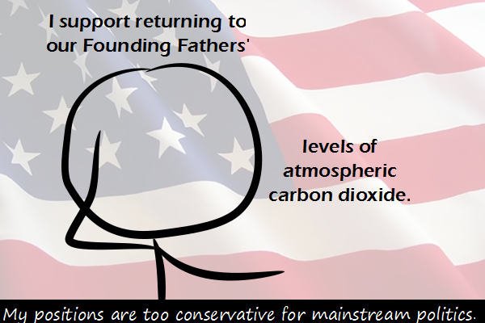

Comic JK 761
When I Feel Like It
⇤
<
?
>
⇥

⇤
<
?
>
⇥
Forum
.
RSS
.
Digg
.
Facebook
.
Reddit
.
Twitter
.
Stumbleupon
Enter your thoughts on number 761 here. Please, no spamming, trolling, phreaking, or global warming. If Thomas Jefferson were alive today, he's say "yes, yes, I've done your mother too, what's your point?" Wot wot wot! This is really good. BE PROUD OF YOURSELF COMIC JK WRITER AND ILLUSTRATOR, BECAUSE I LOVE YOU. >+1 to that! :D Also, nice use of the subjunctive in the title-text. Comic JK, you are pretty awesome. :) referring to the image text, "If Thomas Jefferson were alive today": given the attitudes of his era, he would probably say something very rude about the current President, then declare war on Britain... again... while offering a cigarette to everyone he met... >...with bacon! >Bring it Jefferson! >Thomas Jefferson 2012! >>King George III 2012! >>>King Henry II 2012! >>>>vote Godwinson - Harold's a man who will keep one eye out for those damned Normans... Back to slave power? I doubt it. >a society without relatively cheap/practical/widespread machinery and electricity is pretty much guaranteed to be reverting to slavery - ensuring plentiful electrical supplies is a moral goal, not just a way of having new gadgets...